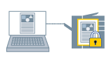

Данные для печати можно сохранить в принтере используя PIN-код (пароль). Эта функция удобна при печати конфиденциальных документов.
|

|
|
Защита и сохранение данных для печати
|
1.
Откройте вкладку [Основные настройки], [Макет страницы], [Окончательная обработка], [Источник бумаги] или [Качество].
2.
Выберите [Способ вывода] → [Защищенная печать] → нажмите [Да].
3.
Настройте [Имя пользователя] и [PIN-код] или [Пароль] → нажмите [ОК].
4.
Нажмите [ОК] на экране драйвера принтера.
5.
Нажмите кнопку печати в приложении.
6.
Подтвердите или установите название документа, имя пользователя и PIN-код (пароль) → нажмите [ОК].
Данные для печати отправляются в принтер. Когда потребуется вывести данные для печати, выберите документ и введите PIN-код (пароль) с панели управления.
Необходимые условия
Чтобы изменить имя пользователя для защищенной печати, снимите флажок [Не разрешать изменять имя пользователя] во вкладке [Настройки устройства] → диалоговое окно [Настройки информации пользователя] → диалоговое окно [Настройки значений по умолчанию].
Выбор, отличный от [Проверка подлинности пользователя] на вкладке [Настройки устройства] - [Управление пользователями].
Справки
При выключении принтера данные для печати, сохраненные в принтере, удаляются.